Chapter 9 Week 9
An .Rmd with extra probability practice can be downloaded here or from Learn.
A revision practice .Rmd can be downloaded here or from Learn. Data for this can be found here or on Learn.
9.1 Introduction to Probability Distributions and Revision
The essential reading for this week can be found in Navarro’s Chapter 9
This week we will extend the probability content to probability distributions. We have already had a glance at coin flips last week. We will extend on the concept this week by talking more about sequences of the events.
Last week we were working towards building your intuition about random and independent events. The beauty of the independent variable is that we can construct distributions of the values the variable can take (e.g. outcomes of the coin toss) which we can then study to evaluate the likelihood of certain events happening (e.g. Kobe and his ‘hot hand’).
We will continue today by working with discrete distributions and the task is to sample from the outcomes, visualise, and attempt to determine the likelihood of an event from the distributions.
9.2 Discrete example (guessing homework answers)
Imagine that you are working on your weekly homework quiz on Learn which has 10 multiple choice questions with 4 answers and you want to see what is the likelihood of getting the answer right if you randomly pick the answer each time with your eyes closed. Assume that there is only one correct option.
We can study the probability of getting all the questions right or, say, of getting only half of questions right, by generating the distribution of the likely outcomes.
If you pick an answer at random then the probability of getting it right should be \(\frac{1}{4}=0.25\). Such would be true also for question two, assuming that your answer for question one is independent of question two.
We can generate samples for each trial (n = 10 questions) and will check what is the probability of getting one, two, three, and so on questions out of 10 right. We will use the rbinom() function in R to generate the distribution of a number of attempts.
We can work with it directly in R using the extensions:
rbinom()to generate the distribution (‘r’ for random) for discrete outcomesdbinom()to study the probability of the outcomepbinom()to study the cumulative probability (also can be described as the area under the curve)
The key arguments we will use are:
x is a vector of numbers.
p is a vector of probabilities.
n is number of observations.
size is the number of trials.
prob is the probability of success of each trial.
9.3 Generate a homework attempt
# We can generate an attempt for 10 questions
rbinom(n = 10, # 10 attempts
size = 10, # 10 questions)
prob = 0.25) # Probability that one is correct (1/4)## [1] 2 1 2 3 2 3 4 1 1 1# We can generate an attempt for 100 questions/trials
rbinom(n = 100, # 100 times of 10
size = 10,
prob = 0.25) ## [1] 3 1 2 5 4 2 2 3 0 5 1 4 1 3 3 2 2 2 2 2 3 1 1 1 2 4 1 2 1 3 2 1 2 2 3 3 1 3 3 3 0 4 2 2 3 4
## [47] 4 3 2 3 2 2 2 5 4 5 4 2 2 2 1 4 3 3 3 4 1 2 1 4 1 2 2 3 4 4 2 2 2 1 1 4 3 1 3 5 4 3 2 4 2 0
## [93] 4 2 5 4 5 2 3 2Let’s assign it to a tibble so we can calculate the proportions and make a plot.
## # A tibble: 7 x 2
## right_guess n
## <int> <int>
## 1 0 6
## 2 1 14
## 3 2 33
## 4 3 22
## 5 4 16
## 6 5 6
## 7 6 3ggplot(data = homework_guess, aes(x = right_guess)) +
geom_bar(fill = 'lightblue') +
labs(x = 'Right Guess', y = 'Count') +
theme_minimal()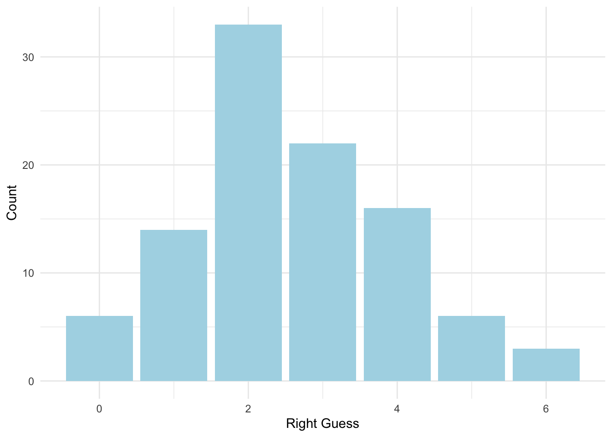
We can change the scale on the graph to see all the options:
ggplot(data = homework_guess, aes(x = right_guess)) +
geom_bar(fill = 'lightblue') +
xlim(0,10) + #note how we add xlim()
labs(x = 'Right Guess', y = 'Count') +
theme_minimal()## Warning: Removed 1 rows containing missing values (geom_bar).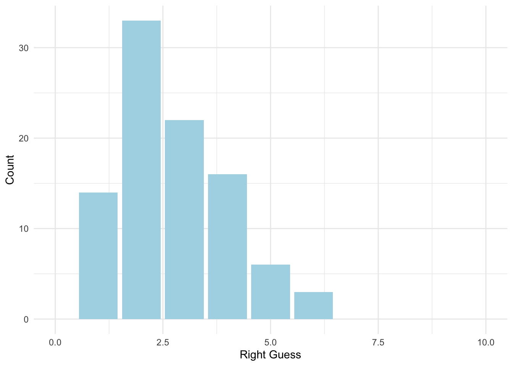
What’s more, we can also change y units to probability.
ggplot(data = homework_guess, aes(x = right_guess)) +
geom_bar(aes(y = (..count..)/sum(..count..)), # we will work with the function of count, hence we use'..'
fill = 'lightblue') +
xlim(0,10) +
labs(x = 'Right Guess', y = 'Probability') +
theme_minimal()## Warning: Removed 1 rows containing missing values (geom_bar).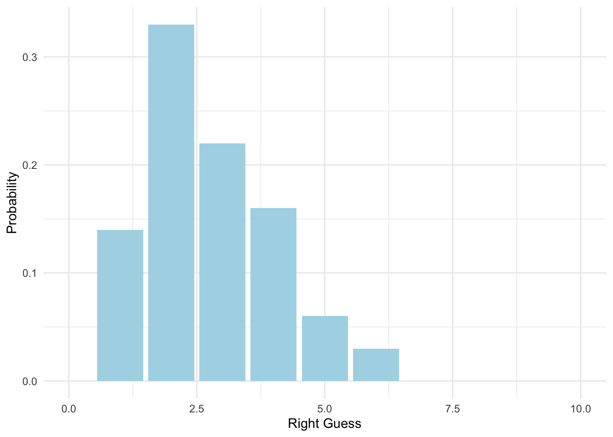
9.4 Changing the probability (TRUE/FALSE)
What if the multiple choice had only two choices for the answer (i.e. TRUE or FALSE questions) - the right answer will now have a probability of 0.5 instead. Let’s reflect on that and create a new tibble():
#Homework guess distribution with TRUE/FALSE
homework_guess_true_false <- tibble(right_guess = rbinom(n = 100,
size = 10,
prob = 0.5)) # Note that the probability of getting the right answer has gone up## # A tibble: 9 x 2
## right_guess n
## <int> <int>
## 1 1 3
## 2 2 4
## 3 3 9
## 4 4 22
## 5 5 23
## 6 6 24
## 7 7 7
## 8 8 6
## 9 9 2Your chances are higher! Can you see why?
ggplot(data = homework_guess_true_false, aes(x = right_guess)) +
geom_bar(fill = 'lightgreen') +
xlim(0,10) +
labs(x = 'Right Guess', y = 'Count') +
theme_minimal()We have less options now, hence a higher chance of picking the correct ones.
Let’s also plot with probabilities:
ggplot(data = homework_guess_true_false, aes(x = right_guess)) +
geom_bar(aes(y = (..count..)/sum(..count..)), fill = 'lightgreen') +
xlim(0,10) +
labs(x = 'Right Guess', y = 'Probability') +
theme_minimal()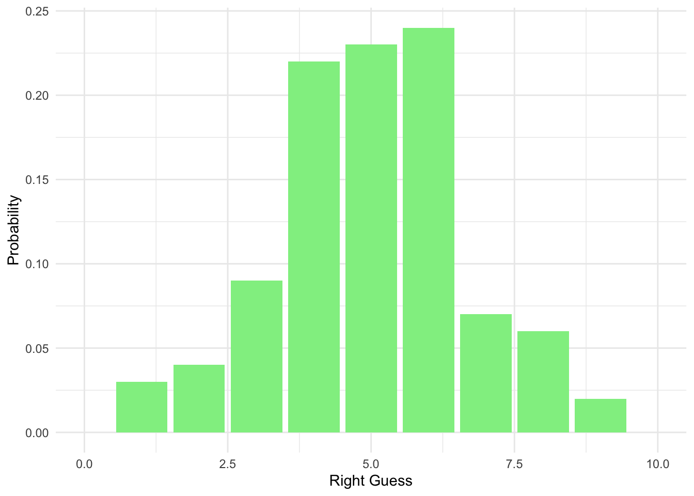
9.5 Studying the distribution
What’s great about learning probability disitributions is that we can use the distribution above to find exact probability of guessing different numbers of questions correctly. We will use dbinom().
Check what the probability is of getting at least one question right when guessing at random:
dbinom(1, # Number of outcomes that we got right
size=10, # 10 trials (we have 10 questions)
prob=0.25) # Probability of getting the right answer (1/4) ## [1] 0.1877117Or for two correct answers:
dbinom(2, # Number of outcomes that we got right
size = 10, # 10 trials (we have 10 questions)
prob = 0.25) # Probability of getting the right answer (1/4) ## [1] 0.2815676Or three:
dbinom(3, # Number of outcomes that we got right
size = 10, # 10 trials (we have 10 questions)
prob = 0.25) # Probability of getting the right answer (1/4) ## [1] 0.2502823And so on….
What if we want to find the probability of guessing all 10 questions correctly? That’s a magical result!
## [1] 9.536743e-07## [1] 0So rare that it is almost zero, so never try to do the quiz just relying on your luck! :)
9.6 Cumulative Probability (Advanced)
By adding the above we can also get a cumulative probability, meaning that we can study what would be the chance to get four or less right, meaning that you want to include the chances of getting zero, one, two, and three right as well.
Graphically, we really want to analyse the probability mass here, given that all should sum up to one. To know the chances of getting one or two questions right we can sum the probabilities:
dbinom(1, size = 10, prob = 0.25) +
dbinom(1, size = 10, prob = 0.25) +
dbinom(2, size = 10, prob = 0.25)## [1] 0.656991A faster way to see all the probabilities at once would be:
all_probs <- round(dbinom(x = c(0,1,2,3,4,5,6,7,8,9,10), prob = 0.25, size = 10),2) # Note that we use round to see the values to two decimal places
all_probs## [1] 0.06 0.19 0.28 0.25 0.15 0.06 0.02 0.00 0.00 0.00 0.00You can then find out what the probability is of getting five or less answers right versus five or more answers right:
## [1] 0.9802723Quite high chances :)
## [1] 0.01972771Not that much! Can you see what we did? We found the probability of outcomes that are equal or less than five and then substracted it from total.
Graphically we can show this as following:
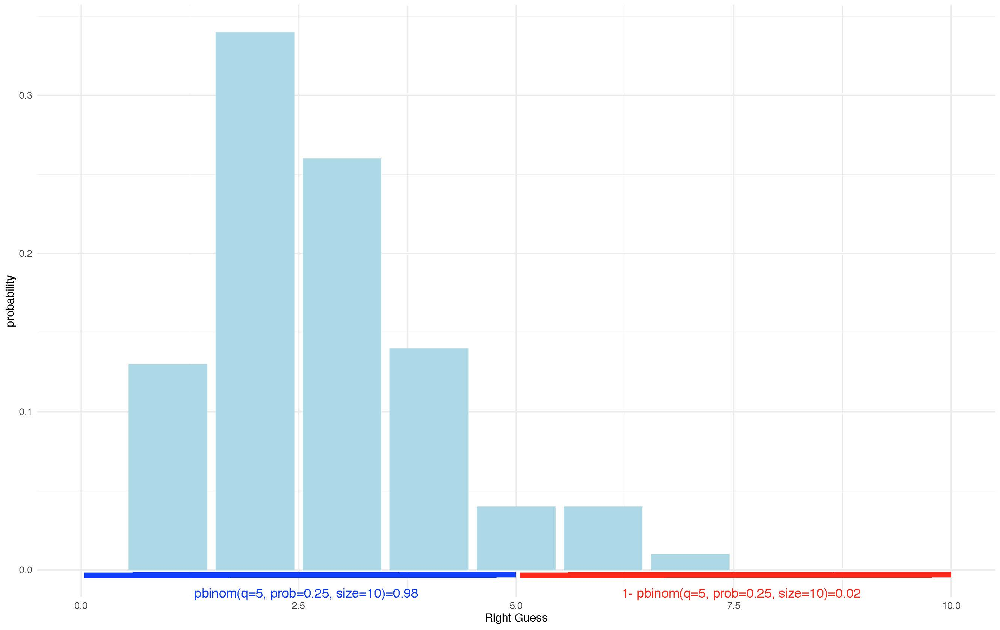
There is an exercise for you to try this yourself with the distribution for TRUE/FALSE questions. Make sure that you revise this before coming back to the course in January as it will remind you of where we ended.
9.7 Revision Practice Rmd. Solutions
This week’s practice is built around the key material we covered during the past eight weeks. You will need to load the data from Learn and then work with the key variables to provide descriptive statistics and visualisations. There is an extra practice at the end for you to work on the discrete probability distribution example as well.
The dataset has information on participants that took part in the memory experiment: ’ IDs, Age, Memory score on three different tasks (Task A, Task B, and Placebo), and data on whether the participant received saw information/text twice.
We are trying to explore whether treament (i.e. task) and seeing information twice may affect the memory scores.
ID: 1 to 143Age: 18-51Memory Score: 1-100 (100 when remembered everything)Task: Task A, Task B, PlaceboSaw_twice: Yes/No (if participant saw the text twice)
## ID Age Memory_score Task Saw_twice
## 1 ID1 21 54 Task A No
## 2 ID2 27 23 Task A Yes
## 3 ID3 25 32 Placebo Yes
## 4 ID4 25 38 Task B No
## 5 ID5 49 43 Task B Yes
## 6 ID6 47 32 Placebo No9.7.1 Provide descriptive statistics for age and memory score variables
There are different ways to do so using what we have learned so far:
Look at each variable separately:
## mean median sd
## 1 34.39583 33.5 9.219331# Then memory
data %>%
summarise(mean = mean(Memory_score),
median = median(Memory_score),
sd = sd(Memory_score))## mean median sd
## 1 44.03472 41 20.54516Or do it all in one go:
data %>%
summarise(mean_age = mean(Age),
mean_memory = mean(Memory_score),
median_age = median(Age),
median_memory = median (Memory_score),
sd_age = sd(Age),
sd_memory = sd(Memory_score))## mean_age mean_memory median_age median_memory sd_age sd_memory
## 1 34.39583 44.03472 33.5 41 9.219331 20.545169.7.2 Descriptives by groups
Provide descriptives of the memory scores by task, and by whether someone saw the information on the task twice:
# By treatment/task
data %>%
group_by(Task) %>% #note that we are adding group_by() to differentiate by a variable
summarise(mean = mean(Memory_score),
median = median(Memory_score),
sd = sd(Memory_score))## # A tibble: 3 x 4
## Task mean median sd
## <fct> <dbl> <dbl> <dbl>
## 1 Placebo 43.2 41 21.9
## 2 Task A 45.7 41.5 19.8
## 3 Task B 43.4 42 20.2# By whether someone saw information on the task twice
data %>%
group_by(Saw_twice) %>%
summarise(mean = mean(Memory_score),
median = median(Memory_score),
sd = sd(Memory_score))## # A tibble: 2 x 4
## Saw_twice mean median sd
## <fct> <dbl> <dbl> <dbl>
## 1 No 44.1 42.5 20.6
## 2 Yes 44.0 41 20.69.7.3 Visualise
Provide distributions of age and memory scores.
# Age
ggplot(data = data, aes(x = Age)) +
geom_histogram(colour = 'grey', fill = 'cornsilk') +
labs(x = 'Age (Years)', y = 'Frequency', title = 'Histogram of Age') +
theme_minimal()## `stat_bin()` using `bins = 30`. Pick better value with `binwidth`.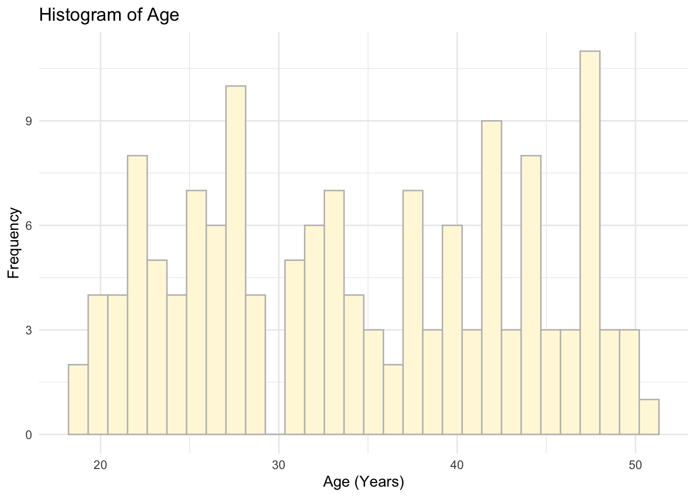
# Memory Scores
ggplot(data = data, aes(x = Memory_score)) +
geom_histogram(colour = 'grey', fill = 'cornsilk') +
labs(x = 'Memory Score (1-100)', y = 'Frequency', title = 'Histogram of Memory Scores') +
theme_minimal()## `stat_bin()` using `bins = 30`. Pick better value with `binwidth`.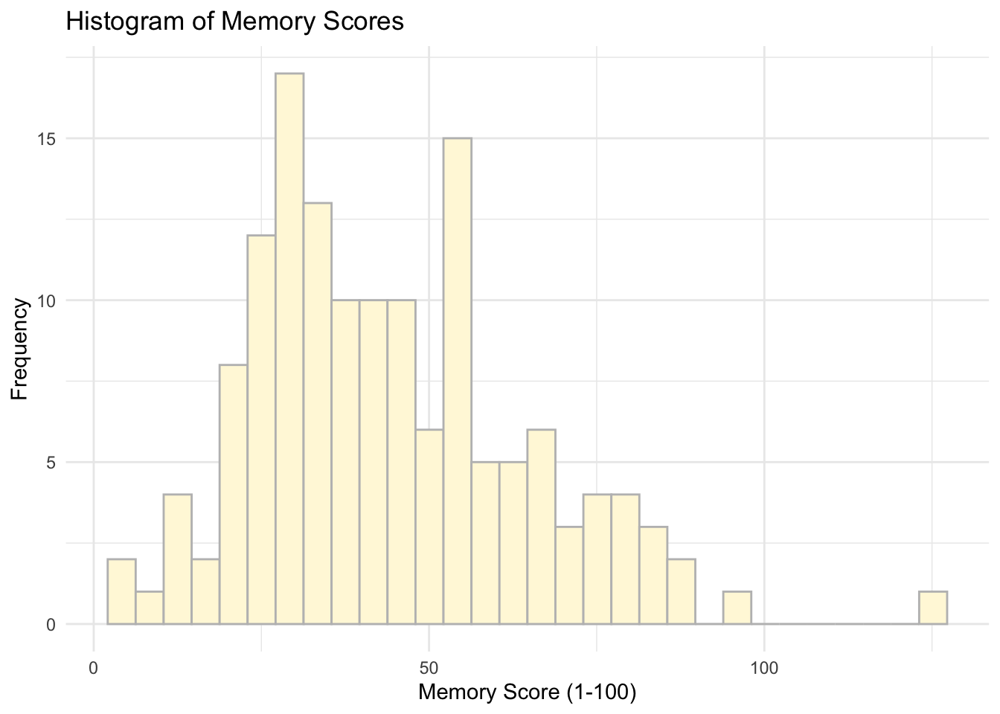
9.7.4 Visualise a subset
What about memory scores only for Task A?
# Memory Scores for Task A
ggplot(data = subset(data, Task %in% c('Task A')), aes(x = Memory_score)) +
geom_histogram(colour = 'grey', fill = 'cornsilk') +
labs(x = 'Memory Score (1-100)', y = 'Frequency', title = 'Histogram of Memory Scores (Task A)') +
theme_minimal()## `stat_bin()` using `bins = 30`. Pick better value with `binwidth`.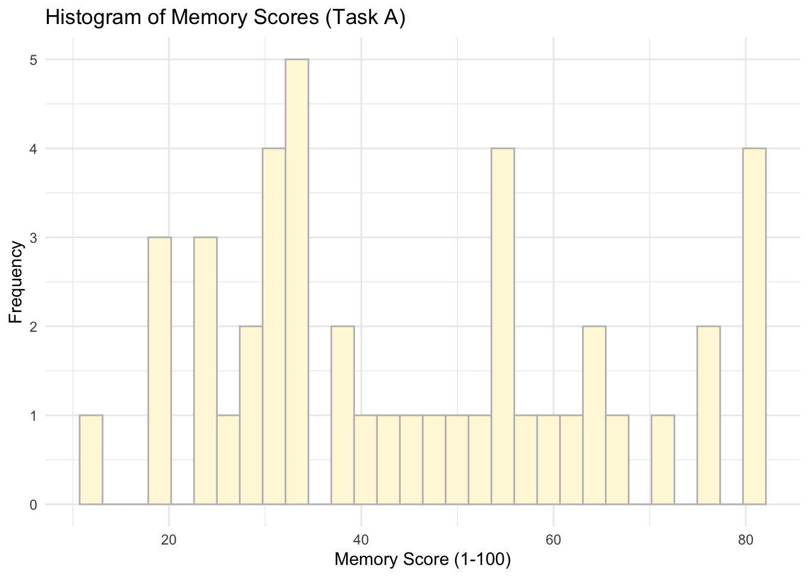
We can also use %>% to do the same. Check this out:
# Memory Scores for Task A
data %>%
filter (Task == 'Task A') %>%
ggplot(data = ., #note how we replace the data with `.` which will allow us to use the specification above as our input
aes(x = Memory_score)) +
geom_histogram(colour = 'grey', fill = 'cornsilk') +
labs(x = 'Memory Score (1-100)', y = 'Frequency', title = 'Histogram of Memory Scores (Task A)') +
theme_minimal()## `stat_bin()` using `bins = 30`. Pick better value with `binwidth`.9.7.5 Variable by a group
What about a plot of Memory Score by Task?

Anything more advanced? Maybe you could try ggridges?
library(ggridges)
ggplot(data = data, aes(x = Memory_score, y = Task, fill=Task)) + geom_density_ridges()## Picking joint bandwidth of 8.01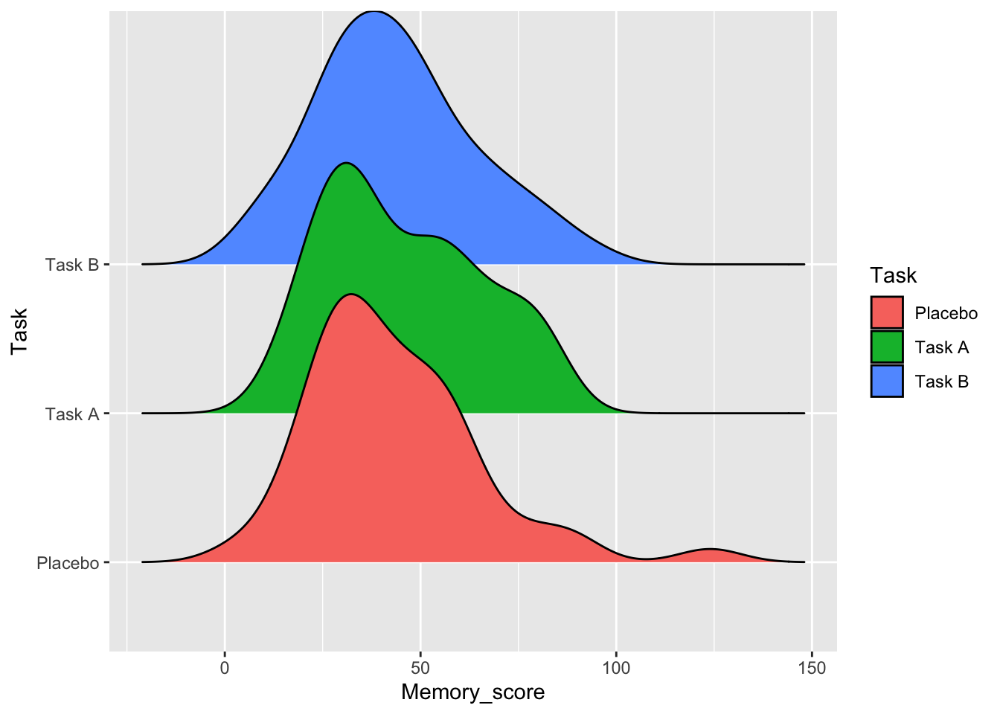
9.7.6 Create a new variable using mutate()
Let’s change memory scores into percentages. How would you add an extra variable that converts scores (1-100) into percentages??
# We can use mutate (try first adding the new variable via piping)
data %>%
mutate(Memory_score=Memory_score/100)## ID Age Memory_score Task Saw_twice
## 1 ID1 21 0.54 Task A No
## 2 ID2 27 0.23 Task A Yes
## 3 ID3 25 0.32 Placebo Yes
## 4 ID4 25 0.38 Task B No
## 5 ID5 49 0.43 Task B Yes
## 6 ID6 47 0.32 Placebo No
## 7 ID7 28 0.51 Task A No
## 8 ID8 26 0.26 Placebo No
## 9 ID9 28 0.56 Placebo No
## 10 ID10 35 0.39 Task A No
## 11 ID11 48 0.32 Task B Yes
## 12 ID12 26 0.19 Placebo No
## 13 ID13 50 0.46 Task B No
## 14 ID14 22 0.26 Task B Yes
## 15 ID15 21 0.28 Task A No
## 16 ID16 44 0.48 Task A Yes
## 17 ID17 45 0.28 Task B Yes
## 18 ID18 40 0.76 Task A No
## 19 ID19 23 0.62 Placebo No
## 20 ID20 42 0.44 Placebo No
## 21 ID21 20 0.26 Task B Yes
## 22 ID22 34 0.30 Task A Yes
## 23 ID23 48 0.24 Task A No
## 24 ID24 48 0.82 Task B No
## 25 ID25 44 0.29 Task A Yes
## 26 ID26 44 0.47 Task B No
## 27 ID27 25 0.55 Task A No
## 28 ID28 48 0.56 Placebo No
## 29 ID29 31 0.30 Placebo No
## 30 ID30 22 0.44 Task B Yes
## 31 ID31 32 0.66 Task A Yes
## 32 ID32 22 0.12 Placebo No
## 33 ID33 29 1.24 Placebo Yes
## 34 ID34 33 0.59 Task A No
## 35 ID35 38 0.34 Task A No
## 36 ID36 31 0.81 Task A Yes
## 37 ID37 49 0.36 Task B Yes
## 38 ID38 25 0.08 Task B No
## 39 ID39 28 0.66 Task B No
## 40 ID40 28 0.62 Placebo No
## 41 ID41 42 0.13 Task A Yes
## 42 ID42 43 0.84 Task B No
## 43 ID43 47 0.60 Placebo Yes
## 44 ID44 28 0.05 Task B No
## 45 ID45 34 0.46 Task B Yes
## 46 ID46 33 0.72 Placebo No
## 47 ID47 24 0.41 Task A Yes
## 48 ID48 39 0.87 Placebo Yes
## 49 ID49 44 0.56 Task A No
## 50 ID50 49 0.22 Placebo No
## 51 ID51 40 0.94 Task B No
## 52 ID52 22 0.42 Task B Yes
## 53 ID53 32 0.33 Task A No
## 54 ID54 47 0.78 Task B Yes
## 55 ID55 37 0.49 Placebo No
## 56 ID56 51 0.19 Task A Yes
## 57 ID57 36 0.67 Task B No
## 58 ID58 22 0.28 Task B No
## 59 ID59 37 0.31 Task A Yes
## 60 ID60 42 0.38 Task B Yes
## 61 ID61 20 0.53 Task B Yes
## 62 ID62 25 0.29 Task B No
## 63 ID63 29 0.38 Task B Yes
## 64 ID64 44 0.53 Task B No
## 65 ID65 28 0.37 Task B No
## 66 ID66 19 0.77 Placebo No
## 67 ID67 42 0.46 Placebo Yes
## 68 ID68 32 0.14 Task B No
## 69 ID69 42 0.89 Placebo No
## 70 ID70 23 0.53 Placebo Yes
## 71 ID71 46 0.36 Task B Yes
## 72 ID72 35 0.55 Placebo Yes
## 73 ID73 23 0.18 Placebo Yes
## 74 ID74 25 0.31 Placebo No
## 75 ID75 38 0.41 Placebo Yes
## 76 ID76 33 0.42 Placebo Yes
## 77 ID77 24 0.34 Placebo No
## 78 ID78 47 0.80 Task A No
## 79 ID79 37 0.20 Task A Yes
## 80 ID80 40 0.25 Task B Yes
## 81 ID81 19 0.75 Task B Yes
## 82 ID82 39 0.42 Task A No
## 83 ID83 24 0.31 Task B Yes
## 84 ID84 27 0.53 Task B No
## 85 ID85 31 0.35 Task B No
## 86 ID86 41 0.28 Task B No
## 87 ID87 29 0.75 Task A Yes
## 88 ID88 43 0.51 Task B No
## 89 ID89 42 0.24 Task A No
## 90 ID90 31 0.31 Task A No
## 91 ID91 22 0.32 Placebo No
## 92 ID92 47 0.43 Placebo No
## 93 ID93 24 0.28 Placebo Yes
## 94 ID94 33 0.39 Task A Yes
## 95 ID95 47 0.34 Task A No
## 96 ID96 33 0.81 Task A No
## 97 ID97 28 0.41 Task B Yes
## 98 ID98 36 0.15 Task B No
## 99 ID99 44 0.71 Task A No
## 100 ID100 40 0.34 Task A Yes
## 101 ID101 21 0.20 Task A No
## 102 ID102 21 0.54 Task A No
## 103 ID103 40 0.67 Task B No
## 104 ID104 38 0.26 Placebo No
## 105 ID105 28 0.57 Placebo No
## 106 ID106 41 0.31 Placebo No
## 107 ID107 23 0.14 Task B No
## 108 ID108 50 0.65 Task A Yes
## 109 ID109 38 0.54 Task A No
## 110 ID110 40 0.34 Placebo No
## 111 ID111 42 0.50 Task B Yes
## 112 ID112 34 0.54 Task B No
## 113 ID113 32 0.22 Placebo Yes
## 114 ID114 46 0.82 Task A No
## 115 ID115 35 0.58 Task B Yes
## 116 ID116 31 0.30 Task B No
## 117 ID117 39 0.63 Task A No
## 118 ID118 29 0.55 Placebo No
## 119 ID119 20 0.26 Placebo Yes
## 120 ID120 26 0.31 Task A Yes
## 121 ID121 22 0.25 Task B Yes
## 122 ID122 50 0.37 Placebo No
## 123 ID123 34 0.52 Placebo No
## 124 ID124 44 0.46 Task B No
## 125 ID125 45 0.33 Task A No
## 126 ID126 22 0.33 Placebo Yes
## 127 ID127 33 0.37 Placebo No
## 128 ID128 43 0.27 Placebo No
## 129 ID129 26 0.45 Placebo No
## 130 ID130 47 0.59 Task B No
## 131 ID131 32 0.19 Task B No
## 132 ID132 42 0.53 Task A Yes
## 133 ID133 44 0.25 Task A No
## 134 ID134 42 0.03 Placebo No
## 135 ID135 28 0.70 Task B Yes
## 136 ID136 33 0.43 Task B No
## 137 ID137 20 0.19 Placebo No
## 138 ID138 46 0.29 Placebo No
## 139 ID139 41 0.45 Task A Yes
## 140 ID140 23 0.46 Placebo Yes
## 141 ID141 45 0.61 Placebo No
## 142 ID142 25 0.62 Task B No
## 143 ID143 28 0.41 Placebo No
## 144 ID144 32 0.65 Task A YesWe can see a new variable above but if you head your data it won’t appear:
## ID Age Memory_score Task Saw_twice
## 1 ID1 21 54 Task A No
## 2 ID2 27 23 Task A Yes
## 3 ID3 25 32 Placebo Yes
## 4 ID4 25 38 Task B No
## 5 ID5 49 43 Task B Yes
## 6 ID6 47 32 Placebo NoThat’s because we have not assigned it to a dataset. To do so, we will need to use <- in the following way:
Check now:
## ID Age Memory_score Task Saw_twice
## 1 ID1 21 0.54 Task A No
## 2 ID2 27 0.23 Task A Yes
## 3 ID3 25 0.32 Placebo Yes
## 4 ID4 25 0.38 Task B No
## 5 ID5 49 0.43 Task B Yes
## 6 ID6 47 0.32 Placebo No9.7.7 Subset observations using filter()
Can you subset only Task A and Placebo from the data? We can use filter and then assign the filtered observations to an object too:
## ID Age Memory_score Task Saw_twice
## 1 ID1 21 54 Task A No
## 2 ID2 27 23 Task A Yes
## 3 ID3 25 32 Placebo Yes
## 4 ID6 47 32 Placebo No
## 5 ID7 28 51 Task A No
## 6 ID8 26 26 Placebo No
## 7 ID9 28 56 Placebo No
## 8 ID10 35 39 Task A No
## 9 ID12 26 19 Placebo No
## 10 ID15 21 28 Task A No
## 11 ID16 44 48 Task A Yes
## 12 ID18 40 76 Task A No
## 13 ID19 23 62 Placebo No
## 14 ID20 42 44 Placebo No
## 15 ID22 34 30 Task A Yes
## 16 ID23 48 24 Task A No
## 17 ID25 44 29 Task A Yes
## 18 ID27 25 55 Task A No
## 19 ID28 48 56 Placebo No
## 20 ID29 31 30 Placebo No
## 21 ID31 32 66 Task A Yes
## 22 ID32 22 12 Placebo No
## 23 ID33 29 124 Placebo Yes
## 24 ID34 33 59 Task A No
## 25 ID35 38 34 Task A No
## 26 ID36 31 81 Task A Yes
## 27 ID40 28 62 Placebo No
## 28 ID41 42 13 Task A Yes
## 29 ID43 47 60 Placebo Yes
## 30 ID46 33 72 Placebo No
## 31 ID47 24 41 Task A Yes
## 32 ID48 39 87 Placebo Yes
## 33 ID49 44 56 Task A No
## 34 ID50 49 22 Placebo No
## 35 ID53 32 33 Task A No
## 36 ID55 37 49 Placebo No
## 37 ID56 51 19 Task A Yes
## 38 ID59 37 31 Task A Yes
## 39 ID66 19 77 Placebo No
## 40 ID67 42 46 Placebo Yes
## 41 ID69 42 89 Placebo No
## 42 ID70 23 53 Placebo Yes
## 43 ID72 35 55 Placebo Yes
## 44 ID73 23 18 Placebo Yes
## 45 ID74 25 31 Placebo No
## 46 ID75 38 41 Placebo Yes
## 47 ID76 33 42 Placebo Yes
## 48 ID77 24 34 Placebo No
## 49 ID78 47 80 Task A No
## 50 ID79 37 20 Task A Yes
## 51 ID82 39 42 Task A No
## 52 ID87 29 75 Task A Yes
## 53 ID89 42 24 Task A No
## 54 ID90 31 31 Task A No
## 55 ID91 22 32 Placebo No
## 56 ID92 47 43 Placebo No
## 57 ID93 24 28 Placebo Yes
## 58 ID94 33 39 Task A Yes
## 59 ID95 47 34 Task A No
## 60 ID96 33 81 Task A No
## 61 ID99 44 71 Task A No
## 62 ID100 40 34 Task A Yes
## 63 ID101 21 20 Task A No
## 64 ID102 21 54 Task A No
## 65 ID104 38 26 Placebo No
## 66 ID105 28 57 Placebo No
## 67 ID106 41 31 Placebo No
## 68 ID108 50 65 Task A Yes
## 69 ID109 38 54 Task A No
## 70 ID110 40 34 Placebo No
## 71 ID113 32 22 Placebo Yes
## 72 ID114 46 82 Task A No
## 73 ID117 39 63 Task A No
## 74 ID118 29 55 Placebo No
## 75 ID119 20 26 Placebo Yes
## 76 ID120 26 31 Task A Yes
## 77 ID122 50 37 Placebo No
## 78 ID123 34 52 Placebo No
## 79 ID125 45 33 Task A No
## 80 ID126 22 33 Placebo Yes
## 81 ID127 33 37 Placebo No
## 82 ID128 43 27 Placebo No
## 83 ID129 26 45 Placebo No
## 84 ID132 42 53 Task A Yes
## 85 ID133 44 25 Task A No
## 86 ID134 42 3 Placebo No
## 87 ID137 20 19 Placebo No
## 88 ID138 46 29 Placebo No
## 89 ID139 41 45 Task A Yes
## 90 ID140 23 46 Placebo Yes
## 91 ID141 45 61 Placebo No
## 92 ID143 28 41 Placebo No
## 93 ID144 32 65 Task A YesNow, put it inside a new dataset, called reduced, you can also specify which variables you may want to keep.
9.7.8 Sort via arrange()
We can check the lowest and highest memory scores via sorting in each group:
## ID Age Memory_score Task Saw_twice
## 1 ID41 42 13 Task A Yes
## 2 ID56 51 19 Task A Yes
## 3 ID79 37 20 Task A Yes
## 4 ID101 21 20 Task A No
## 5 ID2 27 23 Task A Yes
## 6 ID23 48 24 Task A No
## 7 ID89 42 24 Task A No
## 8 ID133 44 25 Task A No
## 9 ID15 21 28 Task A No
## 10 ID25 44 29 Task A Yes
## 11 ID22 34 30 Task A Yes
## 12 ID59 37 31 Task A Yes
## 13 ID90 31 31 Task A No
## 14 ID120 26 31 Task A Yes
## 15 ID53 32 33 Task A No
## 16 ID125 45 33 Task A No
## 17 ID35 38 34 Task A No
## 18 ID95 47 34 Task A No
## 19 ID100 40 34 Task A Yes
## 20 ID10 35 39 Task A No
## 21 ID94 33 39 Task A Yes
## 22 ID47 24 41 Task A Yes
## 23 ID82 39 42 Task A No
## 24 ID139 41 45 Task A Yes
## 25 ID16 44 48 Task A Yes
## 26 ID7 28 51 Task A No
## 27 ID132 42 53 Task A Yes
## 28 ID1 21 54 Task A No
## 29 ID102 21 54 Task A No
## 30 ID109 38 54 Task A No
## 31 ID27 25 55 Task A No
## 32 ID49 44 56 Task A No
## 33 ID34 33 59 Task A No
## 34 ID117 39 63 Task A No
## 35 ID108 50 65 Task A Yes
## 36 ID144 32 65 Task A Yes
## 37 ID31 32 66 Task A Yes
## 38 ID99 44 71 Task A No
## 39 ID87 29 75 Task A Yes
## 40 ID18 40 76 Task A No
## 41 ID78 47 80 Task A No
## 42 ID36 31 81 Task A Yes
## 43 ID96 33 81 Task A No
## 44 ID114 46 82 Task A NoWhat about the highest in Task B?
## ID Age Memory_score Task Saw_twice
## 1 ID51 40 94 Task B No
## 2 ID42 43 84 Task B No
## 3 ID24 48 82 Task B No
## 4 ID54 47 78 Task B Yes
## 5 ID81 19 75 Task B Yes
## 6 ID135 28 70 Task B Yes
## 7 ID57 36 67 Task B No
## 8 ID103 40 67 Task B No
## 9 ID39 28 66 Task B No
## 10 ID142 25 62 Task B No
## 11 ID130 47 59 Task B No
## 12 ID115 35 58 Task B Yes
## 13 ID112 34 54 Task B No
## 14 ID61 20 53 Task B Yes
## 15 ID64 44 53 Task B No
## 16 ID84 27 53 Task B No
## 17 ID88 43 51 Task B No
## 18 ID111 42 50 Task B Yes
## 19 ID26 44 47 Task B No
## 20 ID13 50 46 Task B No
## 21 ID45 34 46 Task B Yes
## 22 ID124 44 46 Task B No
## 23 ID30 22 44 Task B Yes
## 24 ID5 49 43 Task B Yes
## 25 ID136 33 43 Task B No
## 26 ID52 22 42 Task B Yes
## 27 ID97 28 41 Task B Yes
## 28 ID4 25 38 Task B No
## 29 ID60 42 38 Task B Yes
## 30 ID63 29 38 Task B Yes
## 31 ID65 28 37 Task B No
## 32 ID37 49 36 Task B Yes
## 33 ID71 46 36 Task B Yes
## 34 ID85 31 35 Task B No
## 35 ID11 48 32 Task B Yes
## 36 ID83 24 31 Task B Yes
## 37 ID116 31 30 Task B No
## 38 ID62 25 29 Task B No
## 39 ID17 45 28 Task B Yes
## 40 ID58 22 28 Task B No
## 41 ID86 41 28 Task B No
## 42 ID14 22 26 Task B Yes
## 43 ID21 20 26 Task B Yes
## 44 ID80 40 25 Task B Yes
## 45 ID121 22 25 Task B Yes
## 46 ID131 32 19 Task B No
## 47 ID98 36 15 Task B No
## 48 ID68 32 14 Task B No
## 49 ID107 23 14 Task B No
## 50 ID38 25 8 Task B No
## 51 ID44 28 5 Task B No9.7.9 Let’s do some specific count() using filter()
- First check how many people we have in each Task group:
## # A tibble: 3 x 2
## Task n
## <fct> <int>
## 1 Placebo 49
## 2 Task A 44
## 3 Task B 51- Can you show how many people above 40 years of age and saw the information on the task twice in each Task group?
## # A tibble: 3 x 2
## Task n
## <fct> <int>
## 1 Placebo 2
## 2 Task A 7
## 3 Task B 8- For the last one, show how people with the highest memory scores are split by task. Use a memory score threshold of 50 out of 100:
## # A tibble: 3 x 2
## Task n
## <fct> <int>
## 1 Placebo 16
## 2 Task A 19
## 3 Task B 17Task A has greater queanity of high memory scores.
Nicely done! If you got to the end, you have now succefully practiced all the key code and functions we have learnt in previous weeks. Play more if you like for the practice.
9.8 Extra Probability Practice
Work with the distribution we created in the tutorial for guessing on homework quizzes. We want to analyse how likely you are to get specific numbers of question right.
9.8.1 TRUE/FALSE questions
Work with the TRUE/FALSE example we have seen in the tutorial. What if the multiple choice had only two choices for the answer (i.e. TRUE or FALSE questions)? The right answer will now have a probability of 0.5 if you were to guess at random. Create a tibble() to show this:
9.8.2 Count the occurencies
## # A tibble: 9 x 2
## right_guess n
## <int> <int>
## 1 1 2
## 2 2 3
## 3 3 7
## 4 4 25
## 5 5 26
## 6 6 19
## 7 7 13
## 8 8 3
## 9 9 29.8.3 Plot
ggplot(data = homework_guess_true_false, aes(x = right_guess)) +
geom_bar(fill = 'lightgreen') +
xlim(0,10) +
labs(x = 'Right Guess', y = 'count') +
theme_minimal()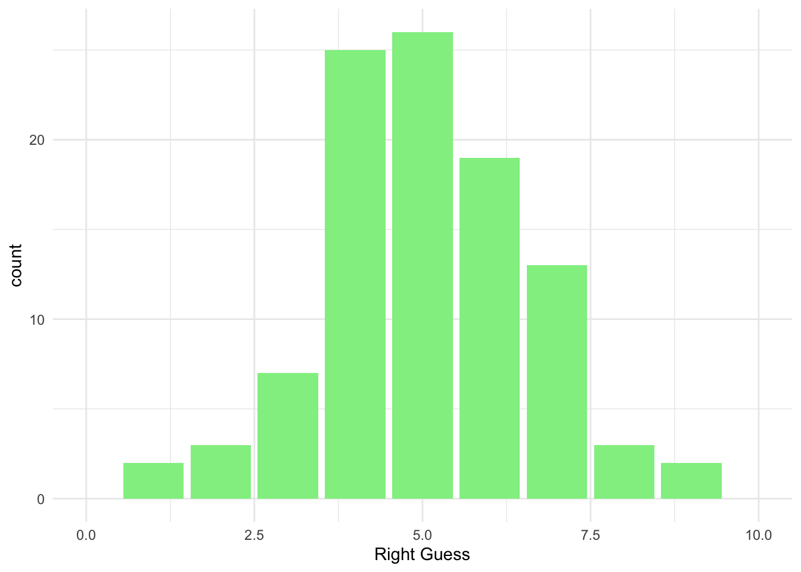
Plot with y being a probability:
ggplot(data = homework_guess_true_false, aes(x = right_guess)) +
geom_bar(aes(y = (..count..)/sum(..count..)), fill = 'lightgreen') +
xlim(0,10) +
labs(x = 'Right Guess', y = 'Probability') +
theme_minimal()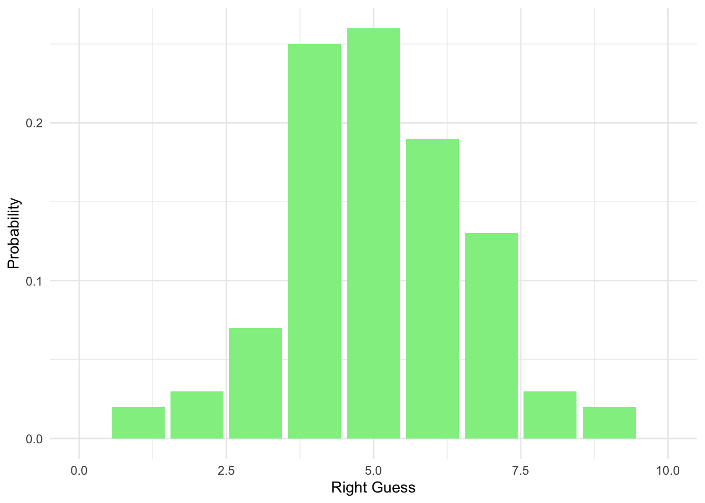
9.8.4 Use dbinom() to study the probability
Check what the probability is of getting only one question right when guessing at random:
## [1] 0.009765625Or for five correct answers:
## [1] 0.2460938Or eight:
## [1] 0.04394531Or put it all together at once (make sure that the probability is 0.5):
all_probs <- round(dbinom(x = c(0,1,2,3,4,5,6,7,8,9,10), prob = 0.5, size = 10),2) # Note that we use round to see the values to two decimal places
all_probs## [1] 0.00 0.01 0.04 0.12 0.21 0.25 0.21 0.12 0.04 0.01 0.009.8.5 Less than five or more than five?
We can also study what the chances are of getting less than five questions right versus more than five questions right in a TRUE/FALSE setting (check your notes online).
## [1] 0.6230469## [1] 0.3769531Better chances compared to when you are doing a quiz with four options! :)